121 منشوراً
أرشيف 2021
كانون الأول 2021

آب 2021
-
 محاضرات وفعاليات · إعلان عقد دورة بعنوان “أساسيات علوم الفضاء والفلك ” – في الفترة من 31/8/2021 – 2/9/2021
محاضرات وفعاليات · إعلان عقد دورة بعنوان “أساسيات علوم الفضاء والفلك ” – في الفترة من 31/8/2021 – 2/9/2021
-
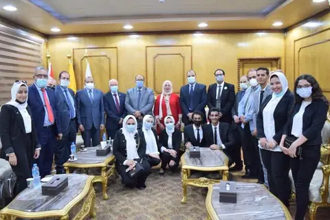
أخبار الاتحاد · رئيس جامعة بني سويف في مصر يستقبل مدير المركز “الإقليمي لتدريس علوم الفضاء” التابع للأمم المتحدة - أخبار الاتحاد · وفد من المركز الإقليمي لتدريس علوم وتكنولوجيا الفضاء التابع للأمم المتحدة برئاسة المدير العام الدكتور المهندس عوني محمد الخصاونة يزور معهد أبحاث وتطبيقات الليزر في جامعة بني سويف – مصر
-
 محاضرات وفعاليات · دعوة لحضور ندوة علمية بعنوان “علوم الفلك والفضاء والتنمية المستدامة”
محاضرات وفعاليات · دعوة لحضور ندوة علمية بعنوان “علوم الفلك والفضاء والتنمية المستدامة”
-
 محاضرات وفعاليات · ندوة علمية بعنوان: علوم الفلك والفضاء والتنمية المستدامة
محاضرات وفعاليات · ندوة علمية بعنوان: علوم الفلك والفضاء والتنمية المستدامة
- أخبار علمية · The Best in West About Islam أفضل ما صنع في الغرب عن الإسلام
-
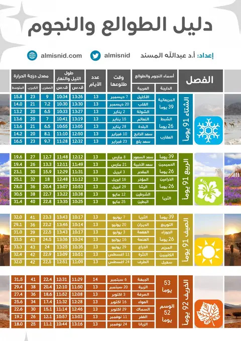
أخبار علمية · العداد الرقمي للفصول والطوالع - أخبار الاتحاد · الشارقة لعلوم الفضاء والفلك تحتفي بذكرى تأسيس الاتحاد العربي لعلوم الفضاء والفلك
- أخبار علمية · ملفات ناسا الغامضة | قصة لحظات الرعب لأول رائد فضاء صيني
- أخبار علمية · تقابل كوكب زحل 2021 .. الإثنين
تموز 2021
- أخبار علمية · بقايا الكواكب حول النجوم القزمة البيضاء
-
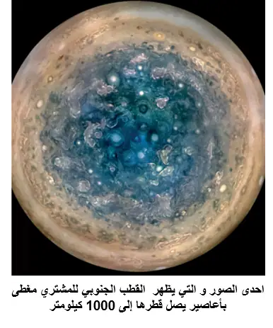
أخبار علمية · الذكرى الخامسة لجونو - أخبار علمية · تلسكوب EHT يرصد قلب أقرب مجرة راديوية
-
 محاضرات وفعاليات · دعوة لحضور ندوة علمية بعنوان ” مكافحة التصحر مسؤولية مجتمعية “
محاضرات وفعاليات · دعوة لحضور ندوة علمية بعنوان ” مكافحة التصحر مسؤولية مجتمعية “
- أخبار علمية · لأول مرة رصد عمليات دمج نادرة للثقوب السوداء مع النجوم النيوترونية
- محاضرات وفعاليات · محاضرة فلكية بعنوان: الاتزان الحراري لكوكب لأرض، د. قيس عزام العمري
- أخبار الاتحاد · د. حميد مجول النعيمي: احتمال تأثير حطام الصاروخ الصيني على البشر ضئيل
-
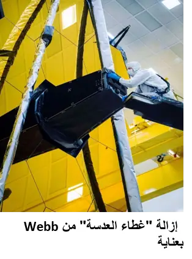
أخبار علمية · اختبار التلسكوب الفضائي جيمس ويب James Webb Space Telescope - أخبار علمية · و أخيرا نجحت ناسا في التحول إلى النسخ الإحتياطية للكمبيوتر على تلسكوب هابل الفضائي
- أخبار علمية · الخميس: الشمس ستتعامد على الكعبة المشرفة
- مقالات · حل لغز الشفق القطبي القوي للأشعة السينية لكوكب المشتري: الشفق القطبي للكوكب العملاق لا يختلف كثيرًا عن الشفق الموجود على الأرض!!
- مقالات · تلسكوب الفضاء ويب والعودة إلى الماضي
- محاضرات وفعاليات · محاضرة بعنوان ” بحثا عن حياة ذكية في الكون” بتنظيم مكتب التوعية الفلكية في الأردن ومكتب التوعية في تونس
- أخبار علمية · مباركة – أول قمر اصطناعي كويتي سينطلق في 2022
- أخبار علمية · جامعة بنى سويف تكرم شلبية لفوزه بعضوية اللجنة الدولية لمعمل الفيزياء الفلكية
حزيران 2021
- أخبار علمية · يوم الكويكبات العالمي ٢٠٢١ – التسجيل الكامل
-
 محاضرات وفعاليات · الاتحاد العربي لعلوم الفضاء والفلك ينظم ندوة علمية بعنوان “اليوم الدولي للكويكبات”
محاضرات وفعاليات · الاتحاد العربي لعلوم الفضاء والفلك ينظم ندوة علمية بعنوان “اليوم الدولي للكويكبات”
-
 محاضرات وفعاليات · دعوة لحضور ندوة افتراضية بمناسبة اليوم العالمي للكويكبات 2021
محاضرات وفعاليات · دعوة لحضور ندوة افتراضية بمناسبة اليوم العالمي للكويكبات 2021
-
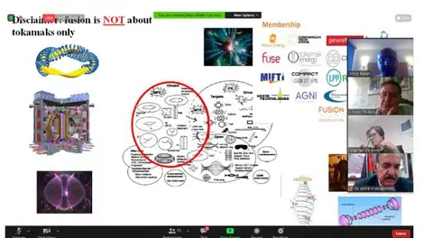
أخبار الاتحاد · شمس مصغرة على الأرض: مفاعل الاندماج النووي (إيتر): مصدر الطاقة في القرن الحادي والعشرين - أخبار علمية · ايراتوستينيس 2021
-
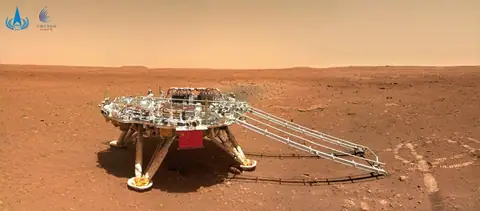
أخبار علمية · الصين ترفع علمها فوق المريخ - أخبار علمية · مجلة قمر الفلكية – الاصدار الأول
-
 محاضرات وفعاليات · دعوة لحضور الندوة العلمية القيمة بعنوان:- شمس مصغرة على الأرض: مفاعل الاندماج النووي (إيتر): مصدر الطاقة في القرن الحادي والعشرين
محاضرات وفعاليات · دعوة لحضور الندوة العلمية القيمة بعنوان:- شمس مصغرة على الأرض: مفاعل الاندماج النووي (إيتر): مصدر الطاقة في القرن الحادي والعشرين
أيار 2021
- أخبار علمية · قضاء الحاجة في الفضاء حلقة علمية!!
- أخبار علمية · لعبة نيوتن وتطبيقاتها في حياتنا وفي الفلك
-
 محاضرات وفعاليات · دعوة لحضور الاحتفالية الافتراضية التالية: احتفالات اليونيسكو باليوم العالمي للضوء 2021 The UNESCO INTERNATIONAL DAY OF LIGHT IDL 2021
محاضرات وفعاليات · دعوة لحضور الاحتفالية الافتراضية التالية: احتفالات اليونيسكو باليوم العالمي للضوء 2021 The UNESCO INTERNATIONAL DAY OF LIGHT IDL 2021
- أخبار علمية · فيديو – كروية الأرض
-
 محاضرات وفعاليات · دعوة لحضور الندوة الرمضانية المفتوحة مع الجمعيات والهيئات الفلكية العربية
محاضرات وفعاليات · دعوة لحضور الندوة الرمضانية المفتوحة مع الجمعيات والهيئات الفلكية العربية
- أخبار علمية · الإمارات إلى القمر في عام 2022
- أخبار علمية · فيديو – تحليق انجنيوتي فوق المريخ.. طموحات ناسا
نيسان 2021
- أخبار علمية · الصين تبدا بإطلاق مراحل من محطة الفضاء الصينية
-
 محاضرات وفعاليات · دعوة لحضور ندوة علمية بعنوان – شذوذ الميون بين الحسابات النظرية ونتائج مختبر فيرمي الأخيرة
محاضرات وفعاليات · دعوة لحضور ندوة علمية بعنوان – شذوذ الميون بين الحسابات النظرية ونتائج مختبر فيرمي الأخيرة
- محاضرات وفعاليات · التسجيل الكامل لندوة السماء المعتمة 2021
-
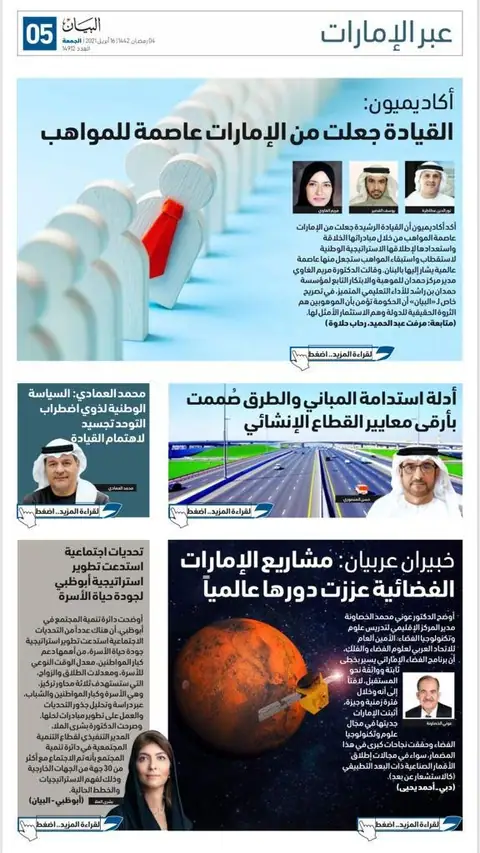
أخبار الاتحاد · خبيران عربيان: مشاريع الإمارات الفضائية عززت دورها عالمياً - محاضرات وفعاليات · التسجيل الكامل لندوة أوقات الصلاة
-
 محاضرات وفعاليات · دعوة لحضور ندوة بعنوان أوقات الصلاة فقه وفلك
محاضرات وفعاليات · دعوة لحضور ندوة بعنوان أوقات الصلاة فقه وفلك
-
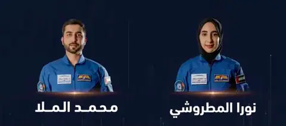
أخبار علمية · الإمارات تعلن – اثنين من رواد الفضاء الجدد بينهم أول رائدة فضاء عربية - محاضرات وفعاليات · التسجيل الكامل للندوة العلمية في علم الفلك والمواقيت
-
 محاضرات وفعاليات · ندوة تحري هلال شهر رمضان المبارك 2021 بين علم الفلك والشرع
محاضرات وفعاليات · ندوة تحري هلال شهر رمضان المبارك 2021 بين علم الفلك والشرع
-
 محاضرات وفعاليات · الرابط المباشر لندوة السماء المعتمة
محاضرات وفعاليات · الرابط المباشر لندوة السماء المعتمة
-
 محاضرات وفعاليات · دعوة لحضور محاضرة وعرض فيلم وثائقي: رحلة يوري غاغارين إلى الفضاء
محاضرات وفعاليات · دعوة لحضور محاضرة وعرض فيلم وثائقي: رحلة يوري غاغارين إلى الفضاء
- أخبار علمية · الليلة: « قمر شعبان » يكتمل بدرا
-
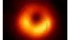
مقالات · لأول مرة.. تصوير المجال المغناطيسي للثقب الأسود - أخبار علمية · انطلاق موسم كسوف وخسوف أقمار المشتري … أبريل 2021
- أخبار علمية · فيديو مترجم: النجوم الميتة في السماء
- أخبار علمية · البقع الشمسية تعود للحياة
-
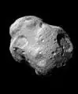
أخبار علمية · كويكب صغير سيحلق قرب الأرض.. اليوم - أخبار علمية · أكبر تلسكوب لاسلكي أحادي الطبق في العالم في Guizhou
آذار 2021
-
 محاضرات وفعاليات · دعوة لحضور محاضرة بعنوان التصوير الحراري في الاستشعار عن بعد
محاضرات وفعاليات · دعوة لحضور محاضرة بعنوان التصوير الحراري في الاستشعار عن بعد
- محاضرات وفعاليات · لقاء مع عالم الفلك والفضاء في وكالة الفضاء الأمريكية ناسا الدكتور عصام حجي كيف تسهم دراسة الكواكب في الحفاظ على الحياة على الأرض
- أخبار علمية · القمر وصور القمر بعيون مرصد العجيري الفلكي بدولة الكويت
- أخبار علمية · الباحث الفلكي / بدر العميرة 26 فبراير 2021
- أخبار علمية · التصوير الفلكي من أهم التخصصات العلمية في دراسة الكون
- أخبار علمية · الفصول الجوية الأربعة والفصول الفلكية الأربعة
- أخبار علمية · الباحث الفلكي بدر_العميرة 8 مارس 2021 أجواء عقرب الدسم وطلوع نجم سعد السعود والأيام الأخيرة من الشتاء، والله اعلم
- أخبار علمية · التصوير #الفلكي بالمدن بفلاتر النطاق الضيق المانعة للتلوث الضوئي
- أخبار علمية · الفلكي بدر العميرة يوضح بعض المفاهيم الفلكية الخاطئة حول تكون الفصول الأربعة والحر والبرد
- أخبار علمية · نجوم الانواء وطلوع الثريا بالصيف والنجم الاحيمر بالشتاء ومعرفة المواسم عند العرب قديما
- أخبار علمية · الباحث الفلكي / بدر العميرة يشرح معرفة العرب قديما الاتجاهات الأربع بالصحراء من ظل الشمس وميلان الشجيرات الصغيرة نحو الجنوب
- أخبار علمية · الثريا عند العرب قديما وتغير الفصول حسب توقيت طلوعها بالسماء جهة الشرق
- أخبار الاتحاد · إعادة انتخاب الدكتور العصيري رئيساً للجمعية الفلكية السورية
-
 محاضرات وفعاليات · دعوة لحضور محاضرة علمية بعنوان “الطريق إلى المريخ”
محاضرات وفعاليات · دعوة لحضور محاضرة علمية بعنوان “الطريق إلى المريخ”
-
 محاضرات وفعاليات · ندوة علمية عربية يابانية حول المهمة الفضائية اليابانية هايابوسا 2
محاضرات وفعاليات · ندوة علمية عربية يابانية حول المهمة الفضائية اليابانية هايابوسا 2
- محاضرات وفعاليات · محاضرة بعنوان انتشار الموجات عبر الأقمار الصناعية
-
 محاضرات وفعاليات · دعوة لحضور الندوة العلمية حول المهمة الفضائية اليابانية “هايابوسا 2”
محاضرات وفعاليات · دعوة لحضور الندوة العلمية حول المهمة الفضائية اليابانية “هايابوسا 2”
-
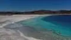
أخبار علمية · بحيرة تركية تحير العلماء.. والسبب “دليل الحياة على المريخ” -
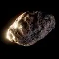
أخبار علمية · الثلاثاء المقبل: كويكب سيمر قرب كوكبنا - أخبار علمية · اليوم العالمي للقباب الفلكية 2021
-
 محاضرات وفعاليات · دعوة لحضور محاضرة علمية يلقيها الدكتور يوسف مصطفى يوسف خليل بعنوان ” تطور المعرفة الفلكية عبر العصور “
محاضرات وفعاليات · دعوة لحضور محاضرة علمية يلقيها الدكتور يوسف مصطفى يوسف خليل بعنوان ” تطور المعرفة الفلكية عبر العصور “
- أخبار علمية · علماء فلك يرصدون أبعد “نجم زائف” في الكون
-
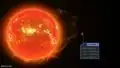
أخبار علمية · علماء يكتشفون كوكبا عملاقا قد يكون صالحا للحياة -
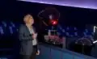
مقالات · القبة الفلكية في الشارقة -
 أخبار علمية · ليونارد مذنب نهاية العام 2021
أخبار علمية · ليونارد مذنب نهاية العام 2021
-
 أخبار علمية · الليلة: القمر قرب السماك الأعزل
أخبار علمية · الليلة: القمر قرب السماك الأعزل
-
 أخبار علمية · عاصفة جيومغناطيسية قطبية
أخبار علمية · عاصفة جيومغناطيسية قطبية
-
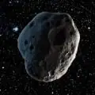
أخبار علمية · السبت: ” أبوفيس” سيقترب من كوكبنا
شباط 2021
-
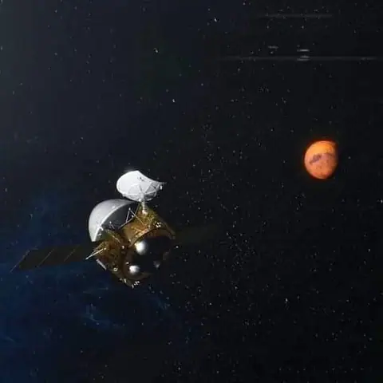
أخبار علمية · (تيانوين -1 ) تدخل مدار انتظار حول المريخ -
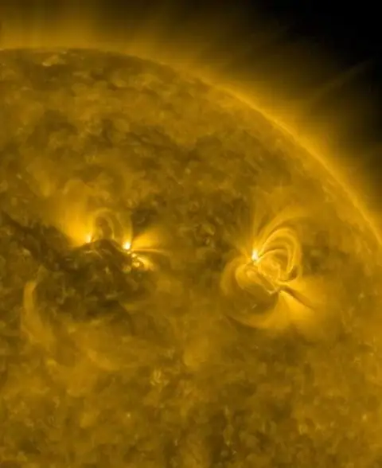
أخبار علمية · بقعة شمسية تتطور سريعاً!! - أخبار علمية · « مارس » شهر الشفق القطبي
-
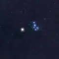
أخبار علمية · الأربعاء: أقرب اقتران بين المريخ والثريا منذ 30 سنة - أخبار علمية · التقاط إشارات لاسلكية من المريخ
-
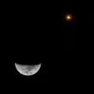
أخبار علمية · القمر يقترن بالمريخ… الخميس -
 محاضرات وفعاليات · فعالية الاتحاد العربي في اليوم العالمي للنساء والفتيات الفلكيات ٢٠٢١ International day for women and girls in astronomy 2021
محاضرات وفعاليات · فعالية الاتحاد العربي في اليوم العالمي للنساء والفتيات الفلكيات ٢٠٢١ International day for women and girls in astronomy 2021
-
 محاضرات وفعاليات · ندوة علمية عربية خاصة عبر الإنترنت حول مشروع مسبار الأمل وانعكاساته المهمة على ازدهار ونمو القطاع الفضائي العربي
محاضرات وفعاليات · ندوة علمية عربية خاصة عبر الإنترنت حول مشروع مسبار الأمل وانعكاساته المهمة على ازدهار ونمو القطاع الفضائي العربي
- محاضرات وفعاليات · دعوة لحضور نشاط فلكي يوم السبت 13 فبراير/شباط بمناسبة اليوم الفلكي العالمي للفتيات والنساء
-
 محاضرات وفعاليات · ندوة دخول مسبار الأمل للمجال الجذبي للمريخ بنجاح
محاضرات وفعاليات · ندوة دخول مسبار الأمل للمجال الجذبي للمريخ بنجاح
- مقالات · هطول البلازما على الشمس
- أخبار الاتحاد · الاتحاد العربي لعلوم الفضاء والفلك يقيم ورشة علمية بمناسبة اليوم الفلكي العالمي للفتيات والنساء
-
 محاضرات وفعاليات · ندوة علمية عربية خاصة ضمن سلسلة من الندوات تزامناً مع قرب وصول مسبار الأمل إلى مدار الالتقاط حول الكوكب الأحمر
محاضرات وفعاليات · ندوة علمية عربية خاصة ضمن سلسلة من الندوات تزامناً مع قرب وصول مسبار الأمل إلى مدار الالتقاط حول الكوكب الأحمر
-
 محاضرات وفعاليات · دعوة لحضور البث الحي والمباشر لدخول مسبار الأمل مدار كوكب المريخ: رحلة الإمارات لاستكشاف المريخ
محاضرات وفعاليات · دعوة لحضور البث الحي والمباشر لدخول مسبار الأمل مدار كوكب المريخ: رحلة الإمارات لاستكشاف المريخ
-
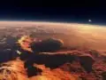
أخبار علمية · لماذا نستكشف المريخ؟ - أخبار الاتحاد · «مسبار الأمل» خطوة مهمة نحو تعزيز التقدم العلمي للإمارات والعرب
-
 محاضرات وفعاليات · كلمة الدكتور عوني الخصاونة، رئيس المركز الإقليمي لتدريس علوم وتكنولوجيا الفضاء لغرب آسيا، خلال ندوة علمية عربية خاصة عبر الإنترنت حول مشروع مسبار الأمل وانعكاساته الملهمة على ازدهار ونمو القطاع الفضائي العربي
محاضرات وفعاليات · كلمة الدكتور عوني الخصاونة، رئيس المركز الإقليمي لتدريس علوم وتكنولوجيا الفضاء لغرب آسيا، خلال ندوة علمية عربية خاصة عبر الإنترنت حول مشروع مسبار الأمل وانعكاساته الملهمة على ازدهار ونمو القطاع الفضائي العربي
- مقالات · العرب إلى المريخ
- مقالات · العرب إلى المريخ – بقعة الشمس جديدة
- مقالات · “الشعرى” يزين ليالي فبراير 2021
- أخبار علمية · ابرز البعثات الفضائية لعام 2021
- مقالات · سديم الجوزاء يزين قبة السماء
- مقالات · قمر الأرض الصغير 2020 SO يقترب الثلاثاء
كانون الثاني 2021
-
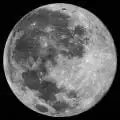
أخبار علمية · القمر بسماء مدينة جدة – 28 يناير 2021 - أخبار علمية · الاستعداد لوصول مسبار الأمل إلى المريخ
- أخبار علمية · مرصد الشارقة الفلكي يسجل اصطدامًا متسلسلا لأجسام نيزكية على سطح القمر
- مقالات · دراسة جديدة: كواكب (ترابست – 1) السبعة متشابهة!!
-
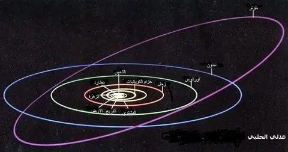
مقالات · المركبة الفضائية New Horizons” نيو هورايزنز ” إلى بلوتو (1) - أخبار علمية · هل تم رصد الجسيم الافتراضي الاكسيون؟
- أخبار علمية · اكتشاف الكوازار الأبعد حتى الآن
- أخبار علمية · اكتشاف 38 قزماً بنياٌ جديداً
- أخبار علمية · فيديو – كابوس رائد الفضاء
- محاضرات وفعاليات · دعوة – محاضرة بعنوان ” انهيار في الدوامة القطبية والاحترار المفاجئ في طبقة الستراتوسفير (شتاء بارد خلال أسابيع) “
- أخبار علمية · من أهم الاكتشافات والأحداث والمشاريع الفيزيائية والفلكية لعام 2020 (حصاد العام)
لا توجد منشورات من هذا النوع في هذه السنة.